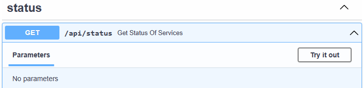

Deployment quickstart
By following this quickstart you will deploy an Azure TRE instance for training and evaluation purposes using the minimum amount of steps and actions.
Prerequisites
To deploy an Azure TRE instance, there are a couple of prerequisites:
- Azure subscription
- Azure Active Directory tenant in which you can create application registrations.
- Git or GitHub Desktop
The Azure TRE solution contains a development container with all the required tooling to develop and deploy the Azure TRE. To deploy an Azure TRE instance using the provided development container you will also need:
Clone the Azure TRE Git repository
Clone the Azure TRE Git repository on GitHub to your local computer.
> git clone https://github.com/microsoft/AzureTRE.git
The Git repository will host some basic configuration for the TRE instances that are deployed from a given repository. Create a new branch for the instance that you are about to deploy.
> cd AzureTRE
AzureTRE> git checkout -b quickstartenv
Now, let's open the cloned repository in Visual Studio Code and connect to the development container.
AzureTRE> code .
Tip
Visual Studio Code should recognize the available development container and ask you to open the folder using it. For additional details on connecting to remote containers, please see the Open an existing folder in a container quickstart.
When you start the development container for the first time, the container will be built. This usually takes a few minutes.
Set environment configuration variables of shared management resources
Open the /devops/.env.sample file and then save it without the .sample extension. You should now have a file called .env located in the devops folder.
The /devops/.env file contains configuration variables for the shared management infrastructure which is used to support the deployment of one or more Azure TRE instances.
You need to provide values for the following variables:
| VARIABLE | DESCRIPTION |
|---|---|
LOCATION |
The Azure region to deploy to |
MGMT_RESOURCE_GROUP_NAME |
Resource group name |
MGMT_STORAGE_ACCOUNT_NAME |
Storage account name |
ACR_NAME |
Container registry name |
ARM_SUBSCRIPTION_ID |
Azure subscription id |
Comment out the following variables by starting the line with a hash #.
# ARM_TENANT_ID=...
# ARM_CLIENT_ID=...
# ARM_CLIENT_SECRET=...
The rest of the variables can have their default values. You should now have a .envfile that looks similar to below.
# Management infrastructure
LOCATION=westeurope
MGMT_RESOURCE_GROUP_NAME=aztremgmt
MGMT_STORAGE_ACCOUNT_NAME=aztremgmt
TERRAFORM_STATE_CONTAINER_NAME=tfstate
IMAGE_TAG=dev
ACR_NAME=aztreacr
ARM_SUBSCRIPTION_ID=12...54e
# Azure Resource Manager credentials used for CI/CD pipelines
# ARM_TENANT_ID=__CHANGE_ME__
# ARM_CLIENT_ID=__CHANGE_ME__
# ARM_CLIENT_SECRET=__CHANGE_ME__
PORTER_OUTPUT_CONTAINER_NAME=porterout
# Debug mode
DEBUG="false"
Tip
To retrieve your Azure subscription id, you can use the az command line interface available in the development container. In the terminal window in Visual Studio Code, type az login followed by az account show to see your default subscription. Please refer to az account -help for further details on how to change your active subscription if desired.
Set environment configuration variables of the Azure TRE instance
Next up, you will set the configuration variables for the specific Azure TRE instance.
Open the /templates/core/.env.sample file and then save it without the .sample extension. You should now have a file called .env located in the /templates/core folder.
The Azure TRE API is protected by Azure Active Directory. This requires an application registration for the API and another application registration for the Open API UI.
Use the terminal window in Visual Studio Code to execute the following script from within the development container:
/workspaces/tre> az login
Note
In case you have several subscriptions and would like to change your default subscription use az account set --subscription desired_subscription_id
/workspaces/tre> ./scripts/aad-app-reg.sh -n aztreqs -r https://aztreqs.westeurope.cloudapp.azure.com/oidc-redirect -a
Note
aztreqs is a placeholder for the unique name you have to choose for your Azure TRE instance. Likewise westeurope is a placeholder for the location where the resources will be deployed, this should match the value you set on the location variable in the previous step.
With the output from the aad-app-reg.sh script, you can now provide the required values for the following variables in the /templates/core/.env configuration file:
| VARIABLE | DESCRIPTION |
|---|---|
TRE_ID |
The identifier for your Azure TRE instance. Will be used for naming Azure resources. Needs to be globally unique and less than 12 characters. |
AAD_TENANT_ID |
The Azure AD Tenant ID |
API_CLIENT_ID |
API application (client) ID |
API_CLIENT_SECRET |
API application client secret |
SWAGGER_UI_CLIENT_ID |
Swagger (OpenAPI) UI application (client) ID |
All other variables can have their default values for now. You should now have a .env file that looks similar to below.
# Used for TRE deployment
TRE_ID=aztreqs
CORE_ADDRESS_SPACE="10.1.0.0/22"
TRE_ADDRESS_SPACE="10.0.0.0/12"
API_IMAGE_TAG=dev
RESOURCE_PROCESSOR_VMSS_PORTER_IMAGE_TAG=dev
GITEA_IMAGE_TAG=dev
DEPLOY_GITEA=true
RESOURCE_PROCESSOR_TYPE="vmss_porter"
# Auth configuration
AAD_TENANT_ID=72e...45
API_CLIENT_ID=af6...dc
API_CLIENT_SECRET=abc...12
SWAGGER_UI_CLIENT_ID=d87...12
Deploy the Azure TRE instance
You are now ready to deploy the Azure TRE instance. Execute the all action of the makefile using make:
/workspaces/tre> make all
Deploying a new Azure TRE instance takes approximately 30 minutes.
Once the deployment is completed you will be presented with a few output variables, similar to below.
app_gateway_name = "agw-aztreqs"
azure_tre_fqdn = "aztreqs.westeurope.cloudapp.azure.com"
core_resource_group_name = "rg-aztreqs"
keyvault_name = "kv-aztreqs"
log_analytics_name = "log-aztreqs"
static_web_storage = "stwebaztreqs"
The Azure TRE instance is initially deployed with an invalid self-signed SSL certificate. This certificate needs to be replaced with one valid for your configured domain name. To use a certificate from Let's Encrypt, run the command:
/workspaces/tre> make letsencrypt
Validate the deployment
Using curl
Use curl to make a simple request to the status endpoint of the API:
/workspaces/tre> curl https://<azure_tre_fqdn>/api/status
The expected response is:
{"services":[{"service":"Cosmos DB","status":"OK","message":""}]}
Using the API docs
Open your browser and navigate to the /api/docs route of the API: https://<azure_tre_fqdn>/api/docs and click Try it out on the operation of choice.

Next steps
- Deploy a new workspace for Azure Machine Learning
- Enable users to access the Azure TRE instance
- Create a new workspace template